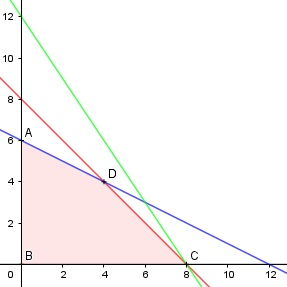

Aufgabe 72 Für die Herstellung von 2 Modellen K1 und K2 auf den Bearbeitungsmaschinen M1, M2 und M3 ist der Zeitbedarf in h in der Matrix dargestellt: M1 M2 M3 K1 1 2/3 1 K2 1 4/3 2/3 Wie viele K₁ und K₂ können auf M1 und M2 in 8 h hergestellt werden? x = Anzahl K1 y = Anzahl K2 Bedingungen: Für M1: 1x + 1y ≤ 8 Für M2: 2 4 ---x + ---y ≤ 8 3 3 Für M3: 2 1x + ---y ≤ 8 3 1. x > 0 x ∈ ℕ 2. y > 0 y ∈ ℕ 3. 1x + 1y ≤ 8 2 4 4. ---x + ---y ≤ 8 3 3 2 5. 1x + ---y ≤ 8 3

Die Eckpunkte A, B, C und D bilden das Planungs- gebiet, das alle Ungleichungen erfüllt. Eckpunkt A: Randgerade 1. geschnitten mit Randgerade 4. 4 4 0 + ---y ≤ 8 |:--- 3 3 y = 6 A(0|6) Eckpunkt B: Randgerade 1. geschnitten mit Randgerade 2. B(0|0) Eckpunkt C: Randgerade 1. geschnitten mit Randgerade 3. x + 0 = 8 C(8|0) Eckpunkt E: Randgerade 3. geschnitten mit Randgerade 5. x + y = 8 4 x + ---y = 8 3 4 x + y = x + ---y |-x - y 3 1 1 0 = ---y |:--- 3 3 y = 0 Eingesetzt: x + 0 = 8 x = 8 E(8|0) = C Eckpunkt D: Randgerade 3. geschnitten mit Randgerade 4. x + y = 8 2 4 ---x + ---y = 8 3 3 2 4 x + y = ---x + ---y |*3 3 3 3x + 3y = 2x + 4y |-2x - 3y x = y Eingesetzt: y + y = 8 2y = 8 |:2 y = 4 x + 4 = 8 |-4 x = 4 D(4|4) Es werden auf M1 4 K1 und 4 K2 genauso wie auf M2 hergestellt. --> Insgesamt sind es 8 K1 und 8 K2 in 8 h.